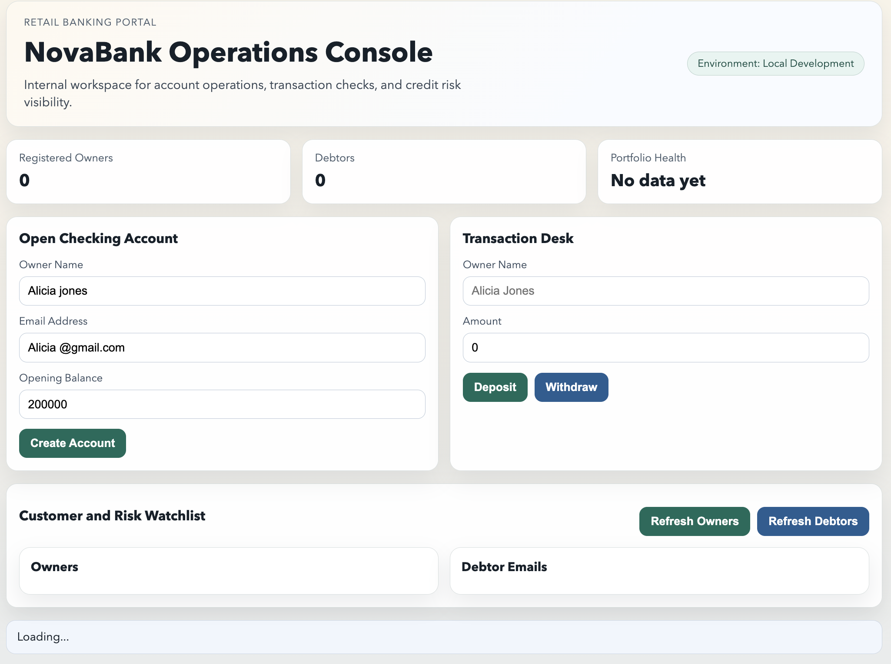
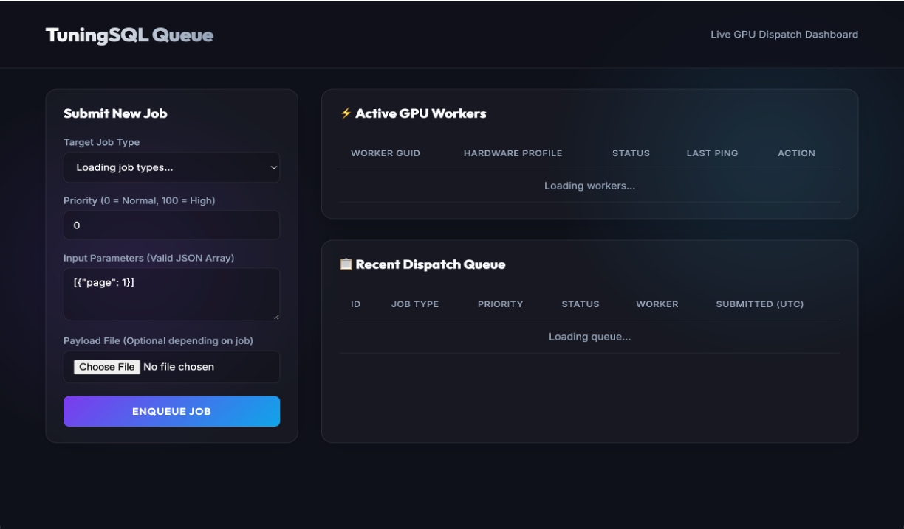

End-user workflow thinking
Translated ambiguous stakeholder needs into internal tooling, documented API contracts, and clearer workflows for non-technical teams.
UX Designer candidate · Healthcare-aware product builder
User experience, visual design, workflow research, and interactive prototypes for complex products.
I design and ship intuitive mobile, web, AI, and internal enterprise tools. My work connects user-centered design methods with practical implementation: journey mapping, information architecture, wireframes, high-fidelity UI, prototypes, usability feedback loops, and developer-ready handoff.
Translated ambiguous stakeholder needs into internal tooling, documented API contracts, and clearer workflows for non-technical teams.
Worked inside life-critical CoxHealth systems where reliability, clear incident flows, and HIPAA-sensitive constraints directly affect care operations.
Created onboarding, founder discovery, authentication, payment, AI response, and error-state experiences across mobile and web products.
Can move from sketches and high-fidelity mockups to working interfaces, APIs, and realistic engineering handoff decisions.
Feedback-driven product iterations across onboarding, navigation, discovery, authentication, and payment flows.
Concurrent launch users supported in an LLM-powered product with real-time response states and mobile delivery.
Manual preprocessing effort reduced by designing an automated document-ingestion workflow for internal teams.
Critical hospital network outages resolved in under 15 minutes, building empathy for high-stakes healthcare workflows.
Mobile product design · shipped application
Entrepreneur discovery, onboarding, payments, and trust-building flows
Challenge: Early-stage founders needed a clearer way to discover collaborators, evaluate fit, onboard quickly, and use paid platform features without losing trust.
UX Work: Created user flows, wireframes, high-fidelity mobile screens, interactive prototypes, onboarding paths, founder discovery structure, authentication flows, and payment interactions.
Iteration: Refined navigation and information architecture across 13+ product iterations using user feedback and engagement signals.
Result: Took the product from concept through App Store deployment while balancing usability, security, privacy, and payment compliance.
Figma · FigJam · Flutter · PostgreSQL · Supabase · Firebase · Docker · GCP
If the embedded preview is blocked by browser policy, open the live site in a new tab.
AI interaction design · mobile UX
LLM-powered university assistant
Challenge: Students needed relevant, trustworthy answers from a domain-specific AI product without confusing latency, failure, or response states.
UX Work: Designed and shipped a cross-platform Flutter client with real-time response flows, clear interaction states, and a data-to-interface pipeline that supported rapid iteration.
Result: Improved answer relevance by 85% through domain-specific model tuning and prepared the product for 200+ concurrent users at launch.
Flutter · Python · PyTorch · LoRA · Flask · Hugging Face · PostgreSQL

Enterprise UX · secure interaction patterns
Secure financial application prototype
Challenge: Sensitive financial actions require predictable flows, visible validation, role clarity, and recoverable error states.
UX Work: Designed API contracts, structured error surfaces, role-based access patterns, JWT session behavior, and refresh-token flows that can be represented consistently in a production-style interface.
Result: Built a dependable prototype foundation with automated coverage and CI/CD, reducing ambiguity between interface behavior and backend rules.
C# · ASP.NET Core · EF Core · Docker · Azure · xUnit · GitHub Actions

Internal tools · workflow design
AI inference routing and document-ingestion workflows
Challenge: Internal staff needed a faster, more reliable way to transform long PDFs and whitepapers into structured data while AI inference jobs scaled.
UX Work: Mapped internal workflow needs, clarified edge cases with stakeholders, designed tooling decisions around the ingestion pipeline, and documented contracts for developer handoff.
Result: Reduced manual preprocessing effort by 70%+ and made structured records easier for non-technical users to access.
Workflow Analysis · Python · PHP · PostgreSQL · Distributed Systems

Research-driven AI UX · evaluation
Meeting transcription, action extraction, and accessibility concerns
Challenge: Long meetings bury decisions, action items, owners, and due dates across recordings and notes.
UX Work: Shaped a pipeline that converts recordings into speaker-attributed transcripts and structured outputs for review.
Research Insight: Early validation showed transcription quality drops on thicker accents, making accent robustness and trust indicators core design concerns.
Team: Group project with collaborator Rikesh Sapkota (@rikesh28).
Python · Whisper · Audio Processing · NLP · Evaluation Pipelines
User-centered design, workflow analysis, journey mapping, information architecture, wireframes, usability feedback loops.
Mobile-first UI, responsive layouts, component-driven interfaces, accessibility-aware design, visual hierarchy, polished handoff.
Figma, FigJam, interactive prototyping, design systems, usability testing, design documentation.
Flutter, React, TypeScript, HTML/CSS, responsive implementation, component-based UI.
Python, C#, SQL, Flask, PostgreSQL, REST APIs, Git, Docker, AI interaction design.
I am targeting UX Designer roles where research, visual craft, technical fluency, and healthcare-aware product thinking matter.